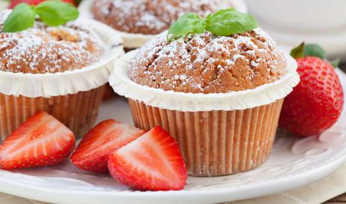
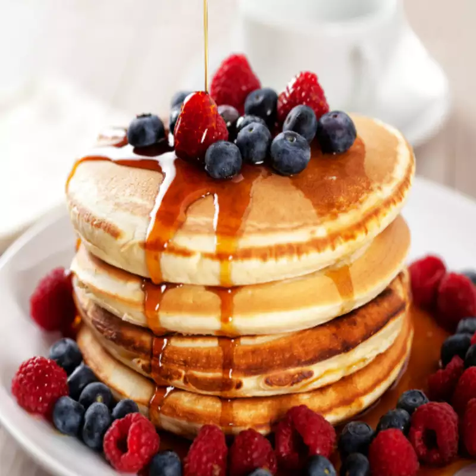
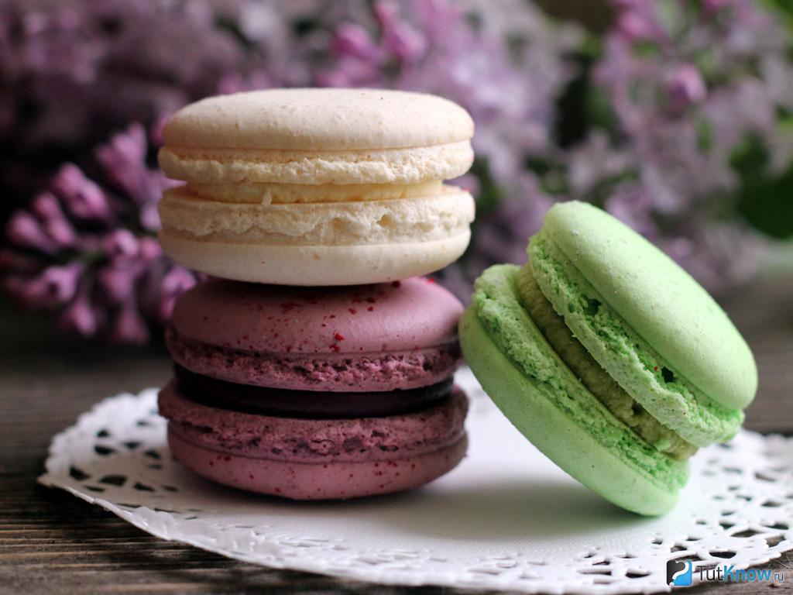
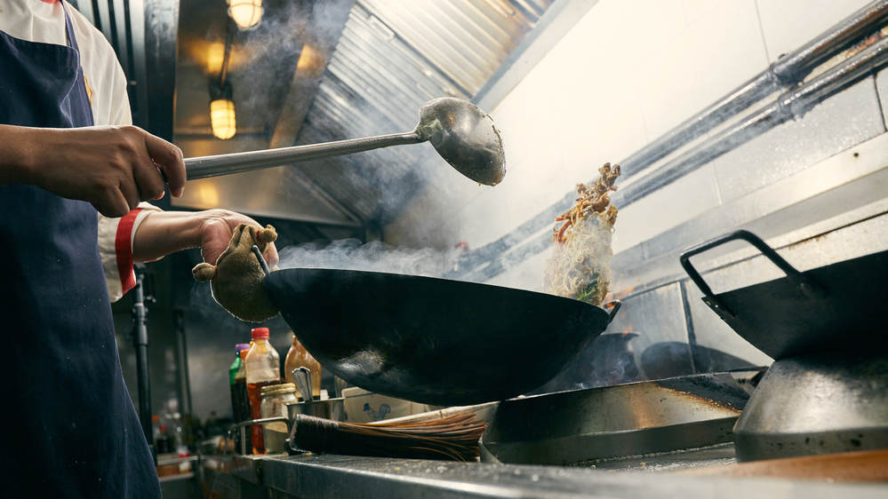

cook quickly
Welcom
We hope you will enjoy spending time on our website


cook deliciously

cook for everyone

Chopping Vegetables: The cook begins by washing and chopping various vegetables, ensuring they are finely diced for the
recipe.
Measuring Ingredients: Precise measurements are crucial in cooking. The cook carefully measures out ingredients like
flour, sugar, or spices to ensure the dish's flavor and consistency are just right.
Sauteing Onions: Sauteing onions is a common technique to add flavor to many savory dishes.
Checking Doneness: One of the final steps involves checking the doneness of the dish.
You can order right now
0-502-800-000